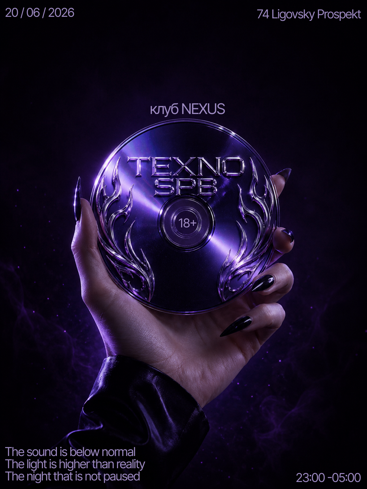
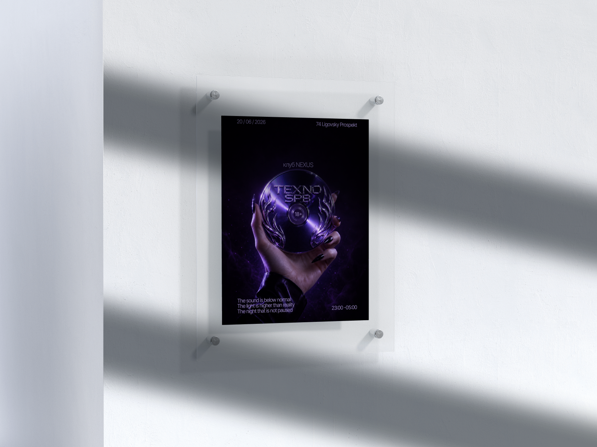
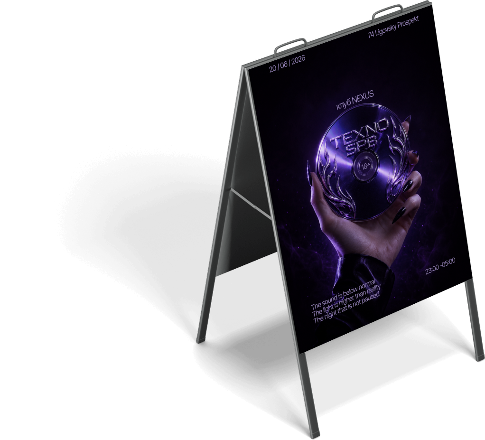
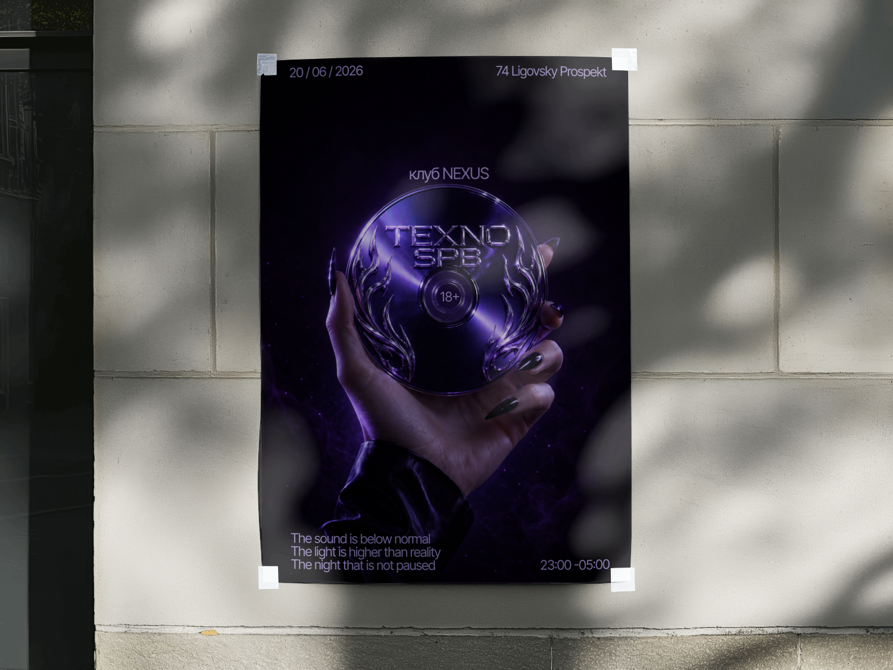

TEXNO SPB
Афиша техно-вечеринки в клубе NEXUS — диск с гравировкой в руке как единственный визуальный акцент на глубоком фиолетово-чёрном фоне.

- Клиент
- Клуб NEXUS, Санкт-Петербург
- Задача
- Разработать афишу техно-вечеринки для клубной коммуникации: макет должен работать и как печатный постер для расклейки и штендера, и как цифровая афиша, передавая атмосферу ночной техно-сцены без прямого изображения диджея или танцпола.
- Роль
- Графический дизайнер: концепция, 3D-моделирование и рендер металлического диска, композиция, типографика, подготовка макета под печать (штендер, уличный постер, рамка) и цифровые форматы.
Вместо привычного для рейв-афиш коллажа из логотипов лайнапа и ярких неоновых элементов был выбран минимализм одного предмета — гравированный металлический диск в руке с острыми ногтями. Такой предмет читается как артефакт, пропуск в закрытый мир техно-сцены, а не как обычный флаер мероприятия.
Глубокий чёрно-фиолетовый фон с лёгким свечением дымки создаёт ощущение полной темноты клуба, из которой выступает только предмет и текст. Всё информационное наполнение (дата, адрес, время, возрастная маркировка) разнесено по углам мелким шрифтом, чтобы не спорить с центральным образом — а короткая строка на английском внизу работает как атмосферная подпись, а не как обычный слоган мероприятия.



Афиша задала фирменный тёмный визуальный код вечеринки для всей уличной и клубной коммуникации — от штендера у входа до расклейки в округе.